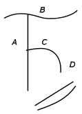
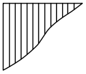

Беседа 2769 от 3877 · Беинса Дуно
Съзвучие
Отче наш.
Чете се темата: „Какво желая за 1938 година?“
„Духът Божий.“
Ще дам някои изяснения за ценността на нещата. Сегашният живот доказва, че всички същества са изгубили ценността, идеята за ценността. Запример, ако вас ви кажат: „Какво нещо е човекът, какво е животът? Какво е растението, какво е рибата, какво е птицата?“ – Може да дадете много определения. Ако вземете двете категории – животните и човекът, цялото животинско царство, както виждате всички тия растения, после птици, млекопитающи и човекът, това са деца на разни степени. Разделени са на две категории. Животните са деца, които едва сега се учат да говорят, бъбрят. Едва няколко думи изговарят някои животни, едва приказват. Сутрин като каже петелът „кукуригу“, раздвижи се и друга дума казва ли освен „кукуригу“? – Друга дума не знае. Най-важната дума в дадения случай е „кукуригу“. Той като каже „кукуригу“ толкоз силно е, че слънцето изгрява. Като каже „кукуригу“, всичко става. Като каже „кукуригу“, намира си храна да яде. Като каже „кукуригу“, времето се подобрява. Та сега правя една смешка. Отива един българин, шоп в Лондон. Той мислил, че в Лондон е като в България. Той казва: „Чичо, я ми кажи къде се намира еди коя си улица“. И той го казва на български. Онзи му отговаря на английски. А българинът казва: „Кажи ми го на български“. Ние сега като влезем в природата, не знаем нейният език. Ние може да говорим, но тя ще ни каже: „Какво искаш?“ – Българинът ще каже: „На български ми кажи“. Сега се намираме в едно противоречие. Говорим какъв е нашият език. Какво нещо е човек? Човек е едно дете, което сега се учи. Той се е научил да говори, богат речник има. Английският речник е от 25 хиляди думи. Разни технически думи. Ние говорим обикновено с 1500 или 2000 думи. Хора, които са употребявали най-много думи. Например Шекспир е употребил 16 хиляди думи, други 8 хиляди, 6 хиляди. Сега, понякой път казвате, че много можем да говорим. Колко думи знаете сега? – Има ли някой от вас да знае 10 хиляди, 20 хиляди думи? При това вие се спирате и казвате: „Какво трябва да се работи в света?“ Виж, петелът научил да кукурига. Запример, петелът като дойде пред къщи, седне на прага, обърне се и казва: „Кукуригу“. Какво иска да каже? – Ще ти дойде много възлюблен гост, който ще бъде като баща ти, майка ти. Когато дойде някой по-странен, петелът ще се обърне. Казва, ще дойде и ще си замине, навън гледа петелът. Вие сега не знаете. Петелът навън пее и навътре пее, и не знаете защо пее. Ще кажете: „Той е един петел“. Когато вие имате да кажете една дума, как трябва да я кажете? – Погрешката е там, че той казва думите без да ги мисли. Казва: „Ще изгрее слънцето“. Ако го питаш защо слънцето ще изгрее, казва: „Не го зная, мен не ме интересува“. Ако го попиташ, че някой гост ще дойде, казва: „Ще дойде“. Той е като пощаджия, който дава едно писмо. Не го интересува какво е писмото, занася писмото. Какво има в писмото, нищо не го интересува. Петелът раздава написаните писма. „Кукуригу“ казва. „Кукуригу“ е едно писмо от невидимия свят, което вие трябва да разгадавате. Разгадаването в какво седи? – Сега всеки един от вас иска да се подслади. Сега знаете ли как се подслажда човешкият език? Колко мъчно е да се подсладят нещата. За да се подслади нещо, трябва вода. Не може да го подсладиш без вода. Водата е носителка на живота.
Та казвам: Сега на човека му трябва той да учи. Той сега се учи да мисли. Как ще изговорите една дума? Трябва да мислиш най-първо. Тогава ще ѝ дадеш смисъла, съдържанието ще ѝ дадеш. Сега вие понякой път казвате: „Ние се молим, обърнем се към Бога“. Като се обръщаш към Бога, някой път в тебе, в сърцето има съмнение. Казваш: „Я ме послуша, я не“. Ако петелът сутрин пее и ако седне и започне да мисли като кукурига, какво ще бъде я ще изгрее слънцето, я не – не може да мислиш така. Петелът сутрин като пее, непременно слънцето ще изгрее. Той казва: Земята може да се обърне, но слънцето ще изгрее, няма никакво съмнение. Той не казва: „Я ще изгрее, я не“, но непременно ще изгрее и тъй става. Ако го попитате как изгрява, ще каже: „Не зная. Аз зная, че ще изгрее, но защо изгрява, не зная. Какво ще донесе и него не зная. Зная, че ще изгрее. Какво ще донесе не зная, вие го изучавайте“. Вие казвате: Трябва да живеем добре. Тази дума именно е тъй както „кукуригу“. Като кажем, че трябва да живеем добре, какво разбираме под думите „добро живеене“? Доброто живеене, то е един акорд. Един акорд: „Сол“, „до“, „ми“. Това е доброто живеене. Не е съзвучие от два тона. Съзвучие има между слънцето и между доброто живеене. Има акорд в разумния живот. Има нещо в човешката мисъл, което наричаме разум. Думата е изменена. „О“-то е обърнато. У нас имаме думата „УМ“. „Ом“ е превърнато на „УМ“. „Ум“ казва българинът. „Ом“, значи туй, което носи всичко, което Бог е дал. Имате всичко туй, с което си служите. А пък сърцето, то е проявление на „Ом“. Половината на „Ом“ е човешкото сърце. Що е сърцето? – Сърцето носи половината от благословенията, които Бог ти дал. Следователно, като влезеш в морето, ще имаш една лодка, ако нямаш лодка, благословението ще иде във водата, ще се разтопи, значи нищо няма да остане. Казвам: Всеки човек в себе си трябва да има една лодка. Когато вашата лодка е във водата, вие ще запазите благословението. То е вашето сърце. Какво представя вашия ум? – Значи със сърцето вие сте риба, във водата сте риба. Сега, ако направя едно уподобление, може да ви туря в едно заблуждение. Запример казвам: Били сте риби. Но рибите са деца, изучават закона на мълчанието. На рибите не е позволено да говорят. На тях е позволено да гледат, нещо да ядат, и вода да пият, колкото искат. Турени са във водата да пият, колкото искат. Като пият вода, изваждат своите възгледи из водата. Имат известни машинки, чрез които изваждат въздуха, да може да дишат чрез хрилете. Те са в школата, ученици са. А в горната школа с вашето мълчание за няколко години искате да дойдете до посвещение. Да изговори човек една дума, не е лесна работа. Изговарянето на една дума е опасна работа. То мяза на българския кремък и огниво. Българинът като цъкне с огнивото, изкарва една искра. Тия малките искри, които са безопасни, ако ти при едно вещество, което се възпламенява цъкнеш, ти може да направиш цял един взрив. Цъкнеш, в тая стая нищо не става, но ако си в една стая с взривни вещества, може да стане голям взрив. Вие с вашия език носите едно огниво, един кремък, който е много опасен. Като се влезе в окултната школа, всички учители препоръчват огнивото да се не цъка навсякъде. Най-първо ще видиш какви вещества има, какво можеш да кажеш, за да не стане взрив някъде. Фиг. 1Да кажем, аз ви дам един символ, вие как ще го изтълкувате /Фиг. 1/?

Та казвам: Добрият живот, това е един музикален акорд, между „сол“, „до“ и „ми“. „Сол“, в дадения случай е един хубав, зрял плод. „До“ е едно снесено яйце. „Ми“ е едно изгряващо слънце. Акорд е това. Гледай яйцето, слънцето, което изгрява и плода, това е един акорд. Или аз наричам това: „сол“ е Любовта. Плод, от който иде животът. Изгряващото слънце е Божията Мъдрост, а яйцето е Истината. Те съставят един Божествен акорд. Всеки един трябва да се учи, да взимате „сол“. Значи, вие можете да вземете „сол“ вярно, само когато плодът е узрял. Един плод, който няма никакъв дефект. И узрелият сок вътре да е вкусен. Само тогава „сол“ можете да вземете вярно. Всичките в живота вие не можете да ядете правилно, ако не сте музикални. Ако вашето тяло не трепти, ако няма акорд, яденето нищо няма да стане. Ако няма акорд, вие не можете да чувствувате, не може да мислите. Ако няма акорд, съгласие между любовта и мъдростта, между мъдростта и Истината и общо съгласие между трите, работите не вървят. Сега да дойдете да мислите. Казвате: „Как?“ – Някои се интересуват много. Материалистите казват: „Как да го направим това?“ – Представете си, че вие се намирате в една стая и че едва минава един малък лъч, през една малка дупчица. Вие казвате: „Какво трябва да направим?“ – Толкоз светлина влиза, нямаме повече. Само през тази малката дупчица. Казвам на вас: Уголемете малко дупката. Вие казвате: „Дарби нямам, пари нямам“. – Защото за да предадеш, трябва енергия. Казвам: Няма време. Разумно ли е някой да дойде и да направи тази дупка? – Не. Ти сам ще направиш дупката. Вие сега ще кажете: „Колко голям трябва да бъде прозорецът?“ Не сте изучавали пропорциите. Ние туряме тия големите прозорци тук на една Божествена къща. Когато Господ направи вашата къща на главата, колко са големи прозорците? Малки ли са очите? Колко са големи? Очите са прозорци. И досега не знаете дължината колко е и широчината колко е. Премерете сега, аз няма да ви казвам туй нещо. През този прозорец понякой път, когато светлината е голяма, прозорецът се намалява. Когато някое впечатление е силно, ти свиваш очите си. Когато гледаш, че някой човек си свил очите, от тебе излиза повече светлина, не може да издържи, че си свива очите. Когато светлината у тебе е по-малка, която излиза, той си отваря очите. Тези нощните животни имат по-широко отворени очи. А тези, които живеят денем, понеже има повече светлина, за да се възприеме повече светлина, очите им са станали малки. Знаете ли колко време е взело, докато се свият тия прозорци у човека? – В човека има и две слушалки, двете уши. Знаете ли колко време е взело на природата, докато създаде ушите? Сега ушите лесно стават, но на природата милиони векове е взело, докато ги създаде. Една форма, втора, трета, цялото органическо царство, от растенията можете да минете през птиците, рибите, млекопитающите и можете да видите през какви форми е минало човешкото ухо и през какви форми е минало човешкото око. Има сега по-хубаво ухо направено. Но за в бъдеще ще се яват още по-големи гънки. Сега имаме няколко гънки. Но за в бъдеще ще се образуват по-хубави гънки. Сега има няколко гънки, защото ухото показва умствените способности. В животните ухото няма никакви гънки. Служат си само за говора, колкото им трябва, а пък в човека има известни вълни, които трябва да се възприемат и стават храна за мисълта, защото от слушането ще разбереш как трябва да мислиш. Не само да чувствуваш, но трябва да започнеш да мислиш. Сега аз искам да направя предмета ясен, да може да го употребите. Понякой път вие седите и се безпокоите. Казваш: „Няма с какво да се занимавам“. Седиш и се безпокоиш. Свършил си гимназия, свършил си университет, седиш и се безпокоиш, че не те назначават на служба. Представете си такъв случай, онези, които са на служба много добре е. Но тогава след като служат 20, 30 години, дотегне им служенето, работата е еднообразна. Представете си, че вие сте един машинописец. Сега какво прави един машинописец? – Казва: „Дотегна ми да свиря, не искам да свиря вече. Дотегна ми на пианото да свиря“. Като види, че някой свири, бяга. Еднообразна станала работата. При писането има еднообразие. Навсякъде има еднообразие и в говора има еднообразие. Някой говори, вие не искате някои неща да ви говори. Нито ти искаш да говориш, нито искаш другите да ти говорят. Еднообразие настанало. Еднообразие настава в живота, когато любовта не функционира. Щом си недоволен, любовта не функционира правилно. Погрешката е в тоновете на любовта. Недоволен си, сприхав си, гневлив си, в тоновете на мъдростта има нещо. Понякой път обичаш да икономисваш истината. В тоновете на истината има нещо, което ти липсва. Сега туй, което ви казвам, то е така разхвърляно. Казва: „Хубаво, ама нещо липсва в любовта. Има нещо, липсва на мъдростта“. Не че липсва. Скъсване има, не функционират струните. Понякой път човешкото сърце разтяга се. Ако турите повече влага на човешкото сърце, разтягат се жиците. Ако го направите много сухо, тогава много се затягат. Та в единия и в другия случай, отношение няма на тия жици. Фиг. 2

Та казвам: Всеки ден констатирайте доброто, да дойде нещо добро във вас. Доброто е плод на Любовта. Нека да опитаме тия плодове. Сега туй е най-ясно обяснено. Защо трябва добре да живеете? – Вие се молите и казвате: Аз искам да бъда добър работник! Вие искате да помагате на хората. Какво ще ми помагате, кажете ми? – Запример, сега аз като ви говоря, виждам че мнозина от вас желаете друго нещо да кажа. Не, че това, което говоря е лошо, но туй нещо, което желаете е преждевременно. Всинца имате желания, които са преждевременни. Всинца страдате от ненавременни желания. Не, че е лошо, което желаете, но е преждевременно. Искаш да направиш голямо добро. Защо искаш да направиш голямо добро? – Че прояви най-първо малкото добро. Сега мнозина не са констатирали кое е малкото добро. Да кажем ти си един професор, уважават те студентите. Един ден минаваш, едно дете паднало. Професорът мине, спре се при това дете. Професорът се заинтересува. По-напред, той е учен човек и се занимава със студентите. А той един ден се спира при малкото дете на което казва една сладка дума. Този професор, той е направил най-добрата лекция, която някога е държал. Другите лекции, които държал на студентите, платили му за тях. В невидимият свят ще се запише туй малкото добро. Като влезат големите добрини, хич няма да ги има, но туй, което е направил с туй малкото дете, то ще му се запише за възнаграждение. Та като влезете в небето, тези, които сте учили, ни най-малко няма да ви посрещнат. Доброто, което сте направили, че сте гощавали някой богат човек, то съвсем няма да бъде там. Но сте направили някому, някое микроскопическо добро, него ще го констатирате. Аз тъй констатирам. Вие сте от много добрите, които се занимавате с много грандиозни работи. Вие се занимавате с поправянето на света, с внасянето на ред и порядък. Хората да са богати, да са хубаво облечени, апартаментите да са хубаво мобелирани, с хубави покривки, това са все грандиозни работи. А пък тия малките работи са важни. Да се занимавате с дребните работи. Аз бих се занимавал с думата „кукуригу“, отколкото си тия грандиозни работи. Ако ми дадат всичките грандиозни работи и ако петелът е изкукуригал, спрете се като кукурига петелът. Защото след като изкукурига, пакост никому не прави. Но, ако тия грандиозни работи, че имали къща с килими постлана, че имали каруца, че имали това, онова, но там може да има спорове. Право ли е да дам? Този направил пакост, онзи, а пък като казвам „кукуригу“, има ли някаква пакост в „кукуригу“? Не, аз разсъждавам в мене. Като каже „кукуригу“ никому пакост не прави. Не че другите работи са лоши, но тия материални блага са дошли преждевременно. Те се дължат на съвсем друга чужда школа. Най-първо Бог каза на Адама: „Няма да ядеш от това дърво!“, другояче ще ви кажа: Ти грандиозни работи няма да искаш в света. Той му каза само едно нещо, „Няма да ядеш от дървото на познание добро и зло“. Там бяха скрити тия грандиозните работи. Мисълта да знае, да бъде княгиня, да бъде красива, богата, силна, учена да бъде. Казва: Няма да вкусиш, няма да ядеш от другите работи, от малките работи ще ядеш. Като дойде онзи, черният адепт казва: „Ти, ако ядеш от това дърво, това ще стане, онова ще стане.“ И всичките тия неща преждевременно дойдоха. И погрешката е там. Пък ви казвам на вас – трябва да се върнем, да дойдем до дървото на живота. Да оставим дървото на познанието добро и зло; да бъдем готови и за него има време. Ще дойде Господ да ни каже: От забраненото дърво дотогава, докато Господ го забранява да не ядем. Като дойдем до Дървото на познанието, доброто и злото, то ви е забранено. Ще дойде един ден, и Господ ще каже: Яжте от туй дърво, но туй дърво вече няма да бъде вредно. Може да ви обясня в какво седи работата. Ако вие нахраните едно малко дете с твърда храна, какво ще стане с него? Неговият стомах не е готов, изисква се много деликатна храна за децата. Един ден, когато израснат зъбите и може да дъвчат, тогава може да ядат храна, която трябва да се дъвче. Злото е такава храна, която трябва да се дъвче. Ако злото ядете, трябва да го дъвчете. Ако в злото човек не мисли, може да дойде голямо нещастие.
Да се върнем към важното. Акорд трябва да има между вашето сърце, между вашият ум, между вашата душа; между волята, между мислите, между чувствата трябва да има акорд, едновременно съзвучие трябва да има. Силата на човека е там. Оттам трябва да започне човек. Онова, за което мислим, онова което чувствуваме, онова, което може да направим доброволно, то е твое. А всяко нещо, което не можеш да направиш, не е твое. Всяко нещо, което другите правят, то е за тях. Всяко нещо, което хората вършат, то е за тях. Всяко нещо, за което ти може да мислиш, то е за тебе. Всяко нещо, за което хората мислят, то е за тях. Да се радваме за онова, което е за нас; и да се радваме, което е и за другите. Ако искаш другите да мислят за тебе, ти трябва да познаваш тези хора и да е будно съзнанието ти.
Какво разбрахте сега? – Да не мязате на туй, както онзи свещеник, който на задушница нарязал хлябовете и пита другите: „Братя, виждате ли ме?“ Те казват: „Виждаме главата ти“. – „Идущата година никак да не ме виждате“. Аз ако съм, бих казал така: Тая година, само ако главата виждате, искам идущата година целият да ме видите. Той искал повече порязаници да има. Вие сега обвинявате тия свещеници. Ами вашите порязаници не са ли по-големи. Не мязате ли на тези свещеници? – Всеки казва: Догодина хич да не ме виждате. Аз виждам някой има си една стая и кухня, казва: „Учителю, да имам 3–4 стаи мобелирани“. Иска да го не виждат. Посещавам го идущата година, той има 4 стаи, кухня, има баня, двор заграден. Казва: „Учителю, много добре стана, но много заборчлях. Трябва да се плаща голяма лихва, откъде ще намеря пари?“ Че как да го съжаля. Тия задачи са за света. Да имате къща, да градите, то е за хората в света. Те са предметно учение, понеже те вършат тия работи. Доста ученици има за градеж. За ученика, за вас има работа. Туй, което те градят и вършат, не е лошо, (но) то не е за нас. Ако един ученик е отишъл в училището и иска да гради, той нищо няма да научи. Той трябва да остави другите да градят, а той да учи, че като свърши училището, тогава. Та вие сте влезли да изучавате изкуството на Любовта. Вие сте в епохата на любовта. Че вие, ако започнете с любовта, ако хората вложат любовта, светът ще се оправи. Ако вие градите една къща и употребите любовта, и ако я постелите с килими, употребите Любовта, никакво противоречие абсолютно няма да има. Ако майките раждат с любов, ако се женят с любов, ако се учат с любов, ако заспиват с любов, ако се събуждат с любов, ако пеят с любов, това е раят. Раят е място, дето всичко се върши с любов. Правите нещо с любов, и ви се отплащат с любов. Колко е хубаво, направиш услуга, отплащат ти се с любов? – Като вървя аз, той казва: „Много ти благодаря, тъй мило ме погледна, че с години седи този образ“. Някой път ти дам нещо, не си доволен. Тогава казвам: Кажи, много ти благодаря, признателен съм за доброто, което ми направи, много ти благодаря. Много ви благодаря за туй, което вие направихте. Той препоръчва себе си.Като направиш едно добро, ще се смалиш, да те видят цял хората. Ще станеш малък, за да ти виждат главата, лицето, ръцете, че като те видят, да запомнят целият ти образ. Не само да видят едно парче, че да кажат: „Има един човек, има отличана глава, като го срещнем какви очи има“. Тъй като погледне, отлични очи, един хубав, мил поглед, едно движение на ръката, една кожа добре сформирана. Косите хубави, не са настръхнали нагоре, но загладени. Казвам: Мекичък. Ако влезете в невидимия свят между ангелите, с какво ще се препоръчате? – По красотата ли? – В нас още красота няма. Носът не е нос, веждите не са вежди, очите му, устата му, лицето му, пръстите му, ухание (не) излиза от нас. Сега казвате: „Какво трябва да се прави?“ – Аз ще ви дам тази година пари да се лекувате. Аз съм решил даром по една баня, аз ще платя. И след туй, след като излезете от банята, по един нов костюм от мене. Старите си дрехи ще ги оставите, ще носите едни нови дрехи, шапка, обуща. И тогава ще разберете малко какво ви трябва. Една баня при любовта ще имате. Ще имате поне един теляк на любовта, да видите какво нещо е теляк. Ще имате и една вода на Любовта, че като ви измие, и вие като излезете от тази баня да я оцените. Сега искам да ме разберете не буквално. Това са добрите условия, които ще ви се дадат. Едно от добрите условия, за да възприемете туй Божественото благо. Ако ние в дадения случай не възприемем благото, има моменти в живота, когато не можем да възприемем Божието благо. Трябва да възприемем Божието благо, от него иде животът. Най-ценното нещо от него иде. От него иде човешката мисъл, човешката разумност. Трябва да се научим ние да обичаме Бога. Като дойдем до Него, тъй изведнъж да се справиш, да бъде един свещен момент. Не за дълго, но за един момент, за две, за три секунди, един свещен момент да мислиш за Онзи, на Когото дължиш всичко, защото ние сме дошли на земята толкоз милиона години и всичко даром ни се дава. Ние още искаме много работи. Не сме се спрели един ден да кажем на Господа една сладка дума от сърце, да кажем: „Колко Ти благодаря, Господи“. Да благодарим. Ние сега седим и чакаме да остареем, да умрем, да идем на оня свят и изгубваме красивото. Ако Господ в този свят не може да ни се изяви, не зная в онзи свят дали ще може да ни се изяви. Защото, за да ни се изяви Господ, трябва да си изпълним работата на земята, и като се върнем при Него, работата да е завършена. Понякой път някой като говори за Господа, за познаване на Господа, опасна работа е. Някои искат да видят Господа. Господа ти в този смисъл не може да видиш. При Господа няма да идеш. Светлината Му и топлината, не може да приемеш. Сега на вас е потребна Божията Любов, не да видите Господа. Той ще покаже една малка светлина, като изгрява, много малка, достъпна за вас, няма да бъде голяма, но много малка светлинка. Вие ще считате, че е надалече. Че този момент на онази малка светлинка и на онази малка топлинка, която ще дойде и за онази сила, туй е достатъчно за тази година да се поощрите. Като срещнете една сестра, гледайте да си давате уважение и почитание една на друга. Уважавайте се, почитайте се. Който иска да го почитат и уважават, трябва и той да почита и уважава. Казвам: Всички да се стремите да си давате уважение и почитание. Казвате: „Този брат още не се е подигнал. Той още е зелен този брат“. Радвайте се на зеления брат. Този брат е невежа. Радвайте се на невежия брат. Той е още дете. Радвайте се на това дете. Той още е дете, той още нищо не знае. В него има едно желание, той иска да знае.
Питам, братя християни, разбрахте ли? – Според мене, разбраното е, което можем да направим. Я изпейте сега „В начало бе Словото“. (Изпяхме песента). Сега в реалния свят го изпейте. Представете си, че вие пеете, ето каква е идеята. Ако пея „В начало бе Словото“, имам мисълта, че отивам да взема голямо богатство, тогава думата „В (начало)“ има смисъл в пеенето. Когато отивам в някое страдание, тогава няма смисъл. Да кажем „В начало“, значи за нещо голямо, как трябва да го изпеем. Като мислите, ще го изпеете. Като не мислите, няма да го изпеете, то не е мъчно. Простите работи лесно не се правят. Всеки да го изпее както знае. Всички го изпейте „В начало бе Словото“. Ако рибата пее: „В начало“, във водата ще бъде. Ако птицата пее: „в начало“, във въздуха ще бъде. Ако едно млекопитаещо пее, по земята ще ходи. Как ще пее рибата във водата? – После, как ще пее птицата във въздуха, ще хвърка. После, млекопитаещото как ще пее по земята? – Та зависи кой как ще пее. Като риба ли ще пеем, като птица ли ще пеем, или като млекопитаещо ще пеем. Рибите не могат да пеят. Ще изпеем един ден само „В начало“. Във всяка песен има няколко основни акорди. Индусите хиляди пъти произнасят думата „ом“ и не могат да пеят. Ако идете в Индия, тази дума е тяхна, малко хора ще намерите, които могат да произнесат думата „ом“. От непроизнасянето на тази дума има едни резултати. Когато произнесеш думата както трябва, има други резултати. В пеенето, ако не пееш, както трябва, ще ти се втръсне. А ако пееш както трябва, ще има едно постоянно разширение. Някой път така пееш, че цяла седмица не искаш да пееш. Някой път като пееш, се заражда желание да пееш втори, трети, четвърти път. Вие сте доста добри певци. Но много люти и кисели работи ядете и доста студена вода пиете, и следствие на това не можете да пеете.
Нека да останат думите във вас: „Господи, да ни озари Твоето милосърдие.“
Мото:
Христос е човекът на изобилната сила,
Христос е човекът на изобилната вяра,
Христос е човекът на изобилната любов.
XVII година.
14 лекция на Общия окултен клас,
държана от Учителя на 5 януари 1938 г., сряда, 5 ч. с.
София – Изгрев.